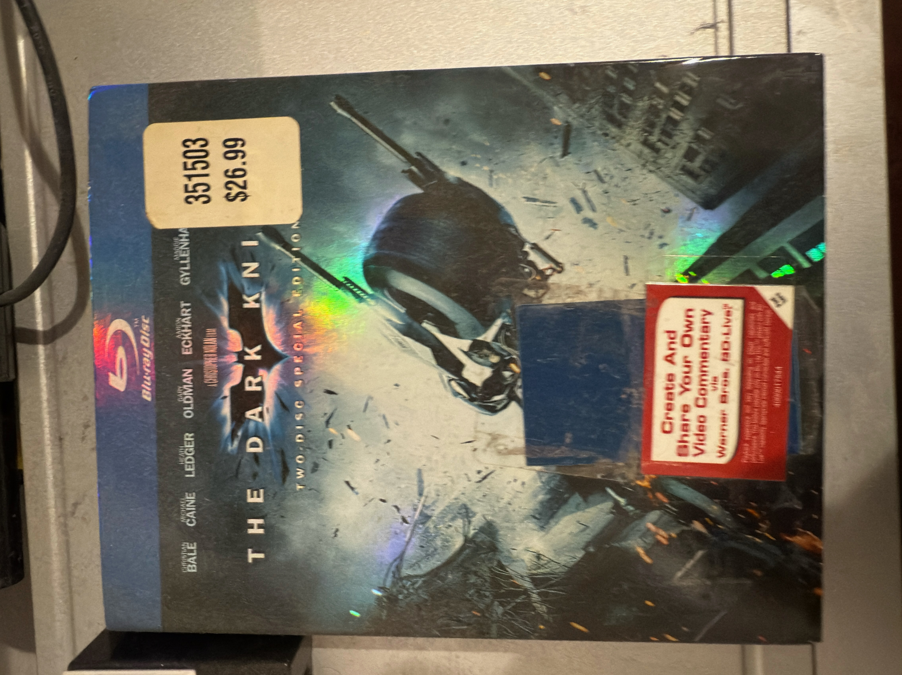
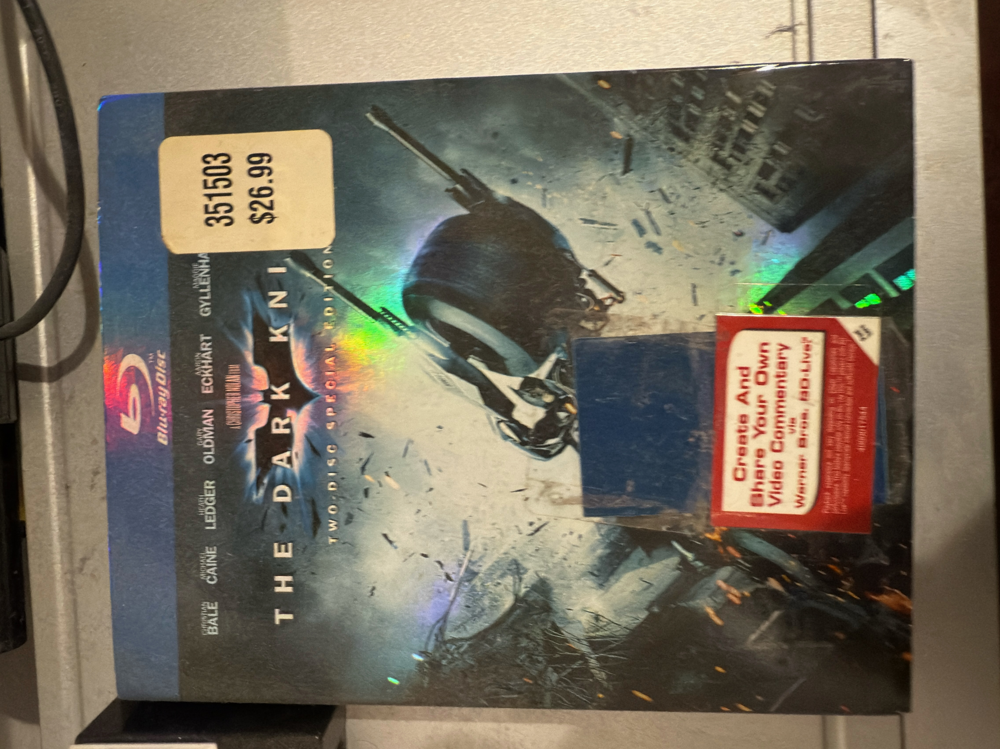

I really enjoy watching films and understanding the process of making them.
I have cultivated this interest throughout the years, but have recently hit my stride with it.
I find that watching the finished product and understanding the process of making said product, is extremely fascinating and adds to the overall experience of watching films.
I have spent a lot of time studying different film making techniques such as cinematogrophy and editing.
These elements are key to the process of making striking and memorable films.
Some of the people I like to study when it comes to film making include: Christopher Nolan, Denis Villeneuve, and David Fincher.
While I watch almost every movie that comes out, I still have a couple of favorites that I always come back to. These currently include, but are not limited to:
To me, each of these films is endlessly rewatchable. I always find myself appreciating something new anytime I watch them and being engrossed by every element.
Here's a picture of my vast DVD Collection!
 

Many of my friends share my interest in film and we have ventured out to make a couple of short films.
I always have a lot of fun making these shorts and find that it is a good way to stay engaged with my friends.
I hope to continue this practice while elevating the quality of work for each short film we create!
Please feel free to navigate back to the Hobbies page to learn about my other hobby!